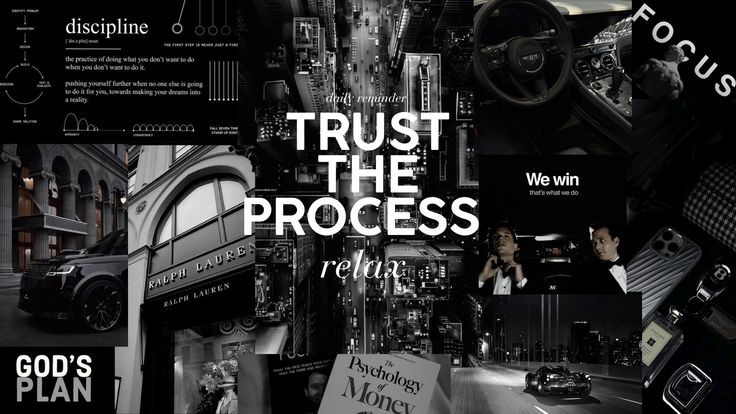

Hi, my name is
I am a B.Tech student at Amrita University (Class of 2029), passionate about low-level programming, algorithmic efficiency, and building robust systems from hardware design up to modern software implementations.
View My WorkFocus on Data Structures and Algorithms (DSA), Time/Space Complexity Optimization, and building efficient problem-solving architectures.
Strong foundations in Linear Algebra (Matrices, Row Echelon Form, Eigenvalues) and Boolean Algebra for logical optimization.
Proficient in C Programming (Pointers, Memory Management, Strings), alongside HTML, CSS, and structural web design.
Experience with Hardware Description Language (HDL), Logic Gates, circuit-level architectures, and embedded system analysis.
Designed and structured a digital platform to manage lost and found items across the school campus. Outlined systemic challenges including item categorization, user verification, and secure database management to streamline the retrieval process.
View RepositoryConducted a technical hydrodynamic assessment of the CorPower C4 Wave Energy Converter. Analyzed energy capture efficiency, operational parameters, and mechanical design to present findings on sustainable wave energy extraction.
View ResearchI'm currently focused on expanding my skills and tackling new challenges in software development and systems engineering. Whether you have a question or just want to connect, my inbox is always open.
Say Hello